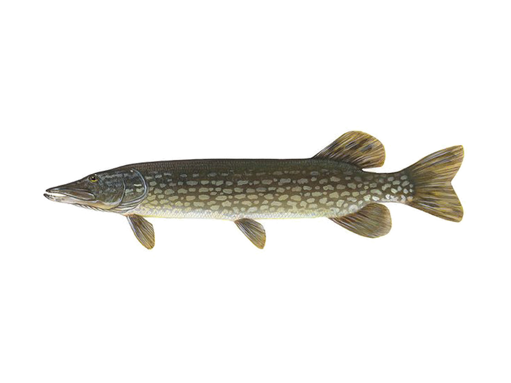

Szczupak (Esox lucius)
Drapieżna ryba słodkowodna, wydłużone ciało i ostry pysk. Preferuje mniejsze ryby.
Przykładowe gatunki
Drapieżna ryba słodkowodna, wydłużone ciało i ostry pysk. Preferuje mniejsze ryby.
Popularna ryba hodowlana, spotykana w stawach i jeziorach. Ważna dla kulinariów i tradycji.
Często spotykana w polskich wodach, chętnie łowiona przez wędkarzy rekreacyjnych.
Wybierając łowisko zwróć uwagę na roślinność przybrzeżną — to często miejsce żerowania szczupaka i okonia.
Niektóre gatunki wymagają ochrony — przed wypuszczeniem ryby sprawdź lokalne przepisy.